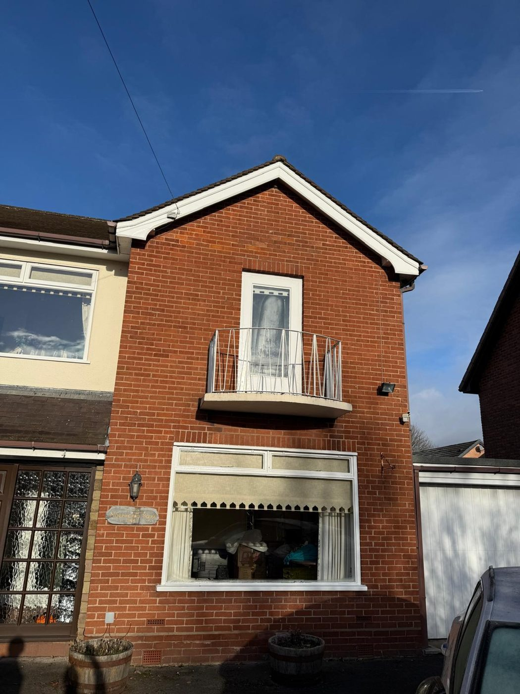
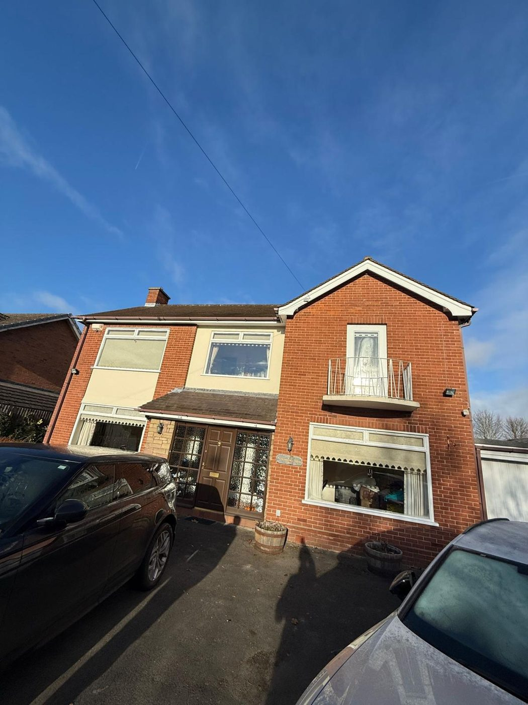
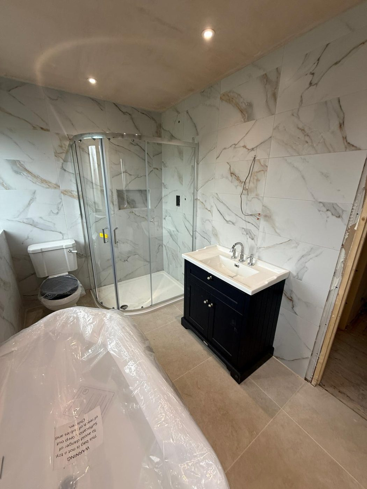
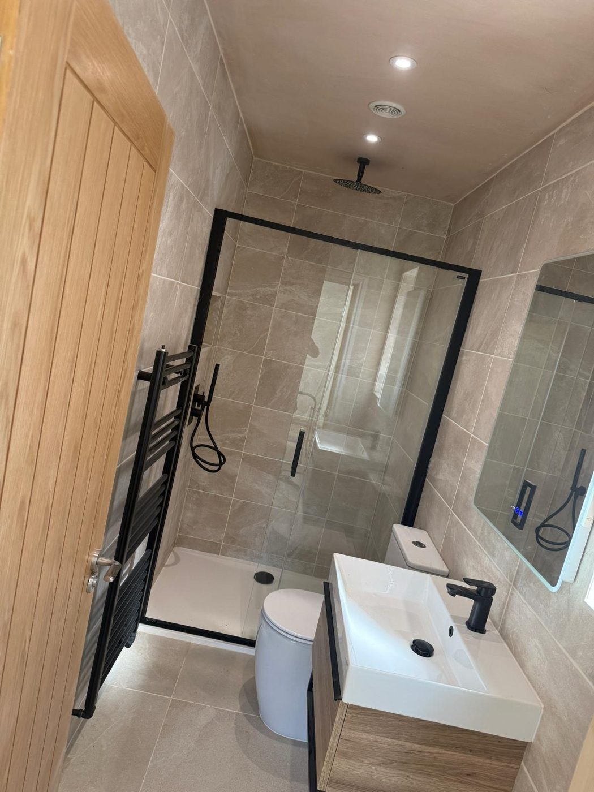
1 / 4Home / Portfolio / Client Work / Sandbach Renovation
Completed · Client ProjectSandbach · Full two-storey refurbishment & extension
Client Project · Sandbach
Our client's Sandbach home was a tired two-storey property that needed far more than a cosmetic refresh. We took the house back to brick internally — opening up dated, compartmented rooms and stripping out everything from the original bathrooms to the old fireplaces — to create a clean canvas we could rebuild around a better, more open layout.
From there we managed every trade in-house. New groundworks and a rebuilt rear extension added space and light, structural openings reworked the flow between rooms, and a full first and second fix brought the house up to a modern standard throughout — all coordinated on a single contract, with one point of contact from the first day to the last.
The finished home speaks for itself: two brand-new bathrooms, reconfigured living spaces, a completed extension and a refreshed façade. What began as a dark, dated property left our care as a warm, contemporary family home — delivered end to end, and finished to the standard we'd want in our own homes.
The transformation
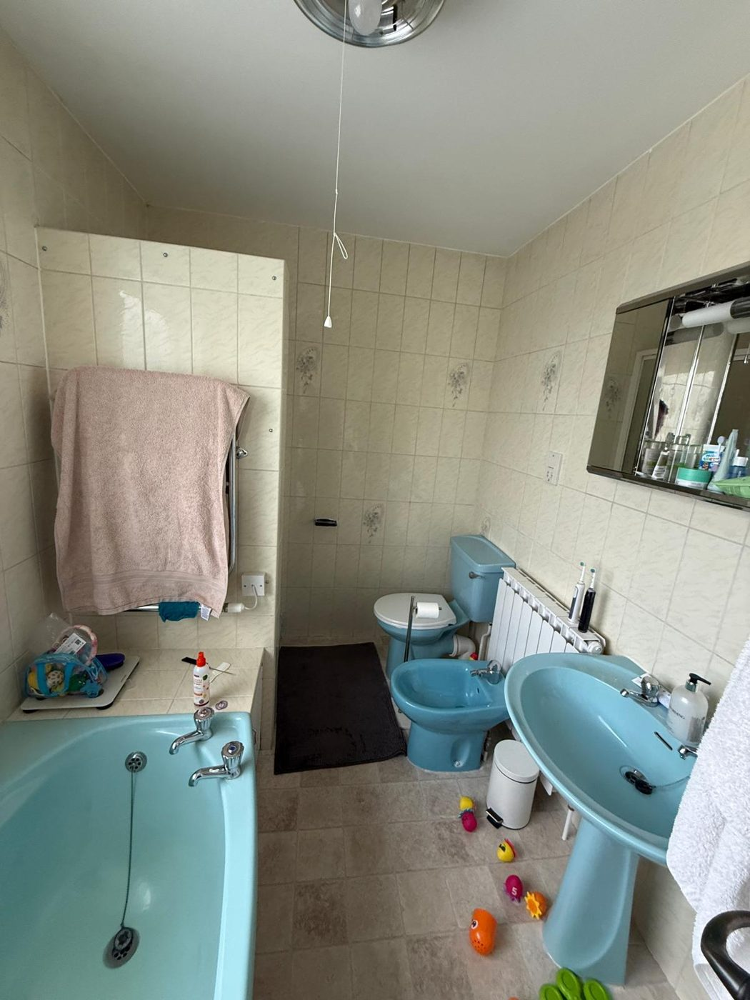
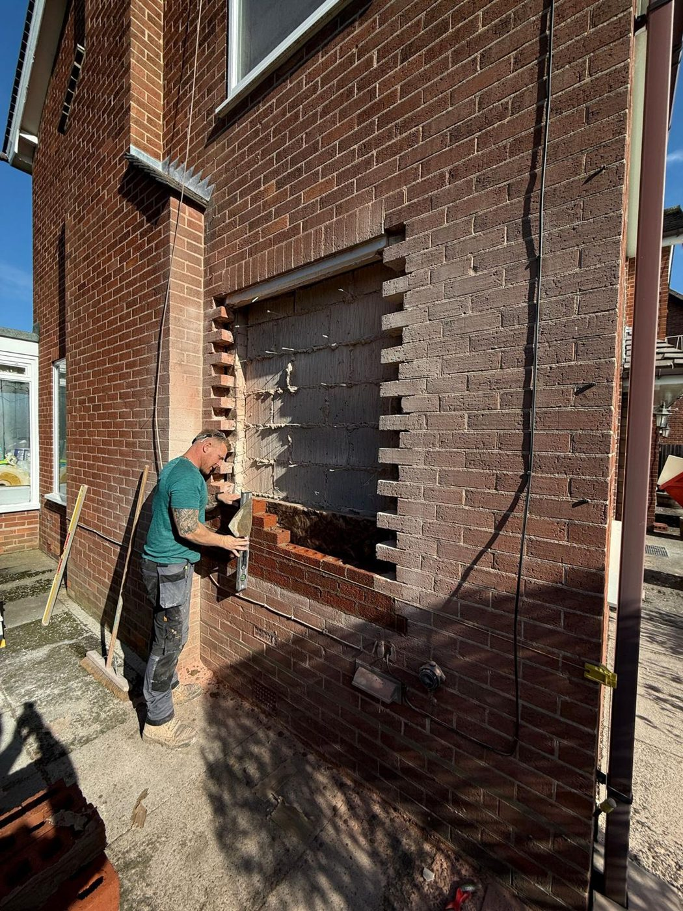
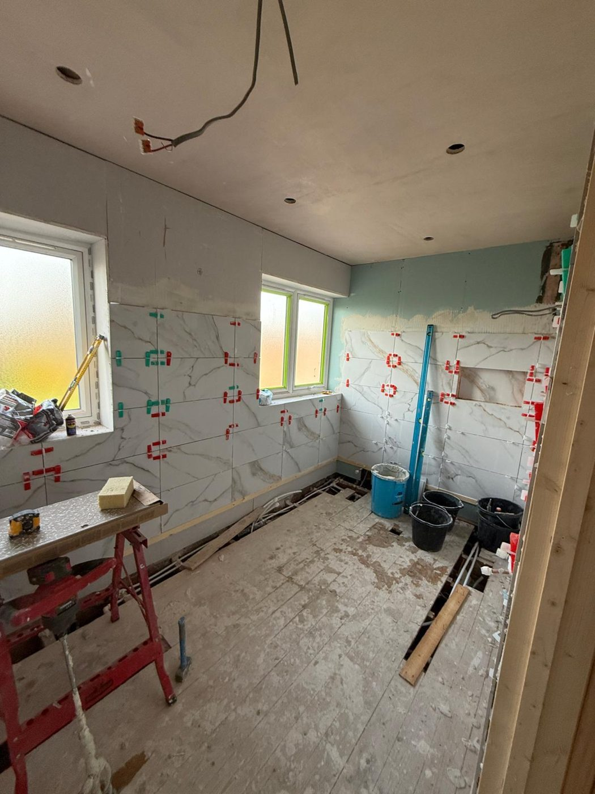
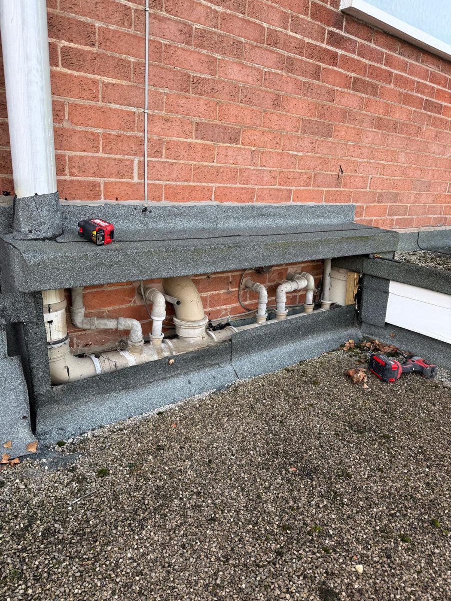
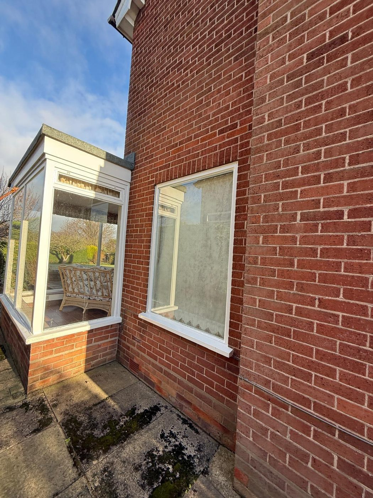
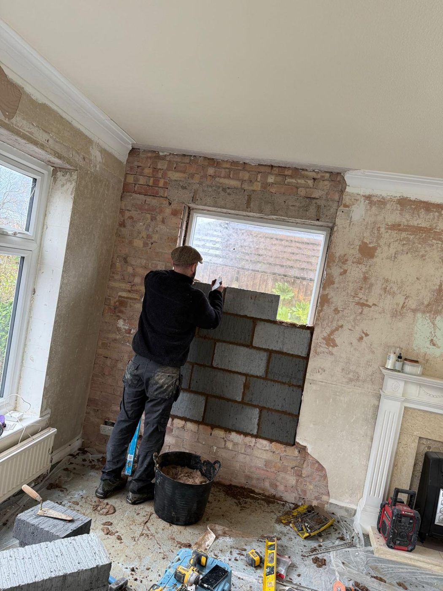
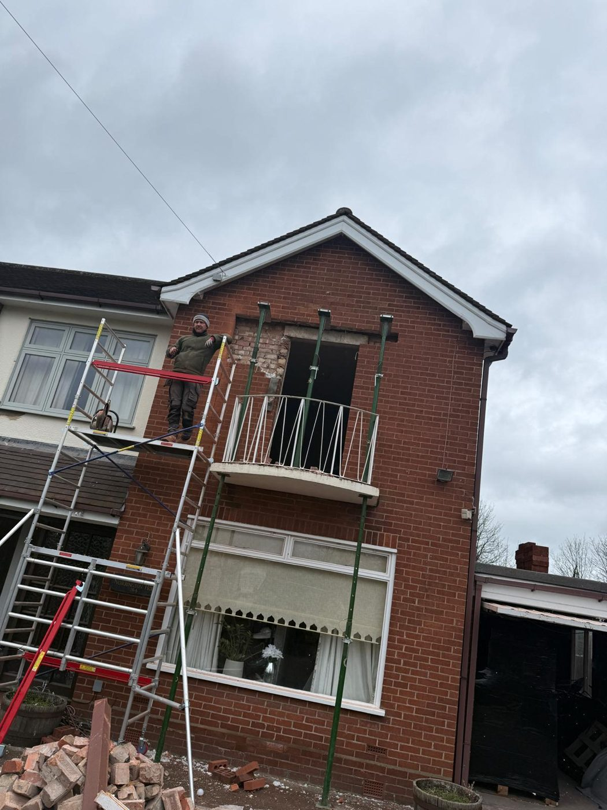
Planning something similar?
Whether it's a full renovation, an extension or a single room, we take it from concept to completion.
Get in touch Back to client work